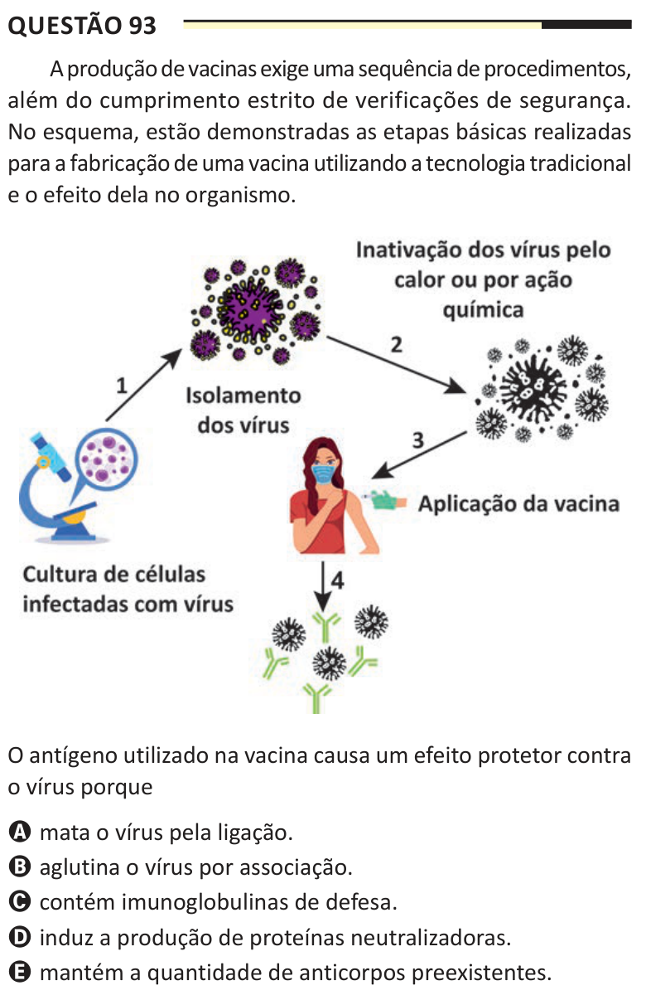

Questão 108 — Ciências da Natureza
Questão 107 — Ciências da Natureza
Questão 106 — Ciências da Natureza
Questão 105 — Ciências da Natureza
Questão 104 — Ciências da Natureza
Questão 103 — Ciências da Natureza
Questão 102 (ANULADA) — Ciências da Natureza
Questão 101 — Ciências da Natureza
Questão 100 — Ciências da Natureza
Questão 99 — Ciências da Natureza
Questão 98 — Ciências da Natureza
Questão 97 — Ciências da Natureza
Questão 96 — Ciências da Natureza
Questão 95 — Ciências da Natureza
Questão 94 — Ciências da Natureza
Questão 93 — Ciências da Natureza
